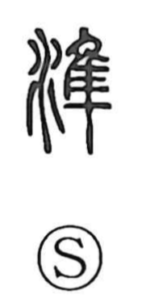

準

Uncategorized
Kun: tairaka, nori, nazoraeru | On: jun
water level ・ standard
Explanation
A phono-semantic character: the water element suggests leveling by water, while the component 隼 serves as the phonetic, pointing to the on reading jun. Shuowen describes it as flat and explains it as a tool for gauging evenness. From this image of making surfaces level, the sense broadened to an even level (heijun), and then to a benchmark or standard (hyojun) and the rules to be used as a basis (junsoku).